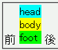
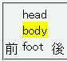

インラインテーブルでは、行グループ要素や行要素に背景などのスタイルを指定しても無視される。
<div>前 <span style="display:inline-table;"> <span style="display:table-header-group; background:aqua;"> <span style="display:table-row;"> <span style="display:table-cell;">head</span> </span> </span> <span style="display:table-footer-group;"> <span style="display:table-row; background:lime;"> <span style="display:table-cell;">foot</span> </span> </span> <span style="display:table-row-group;"> <span style="display:table-row;"> <span style="display:table-cell; background:yellow;">body</span> </span> </span> </span> 後</div>
インラインテーブルのヘッダ行の背景色（行グループ要素で指定）は空色、フッタ行の背景色（行要素で指定）は黄緑色、その他の行の背景色（セル要素で指定）は黄色になるはずです。
Opera7.23標準モード
Netscape7.1標準モード